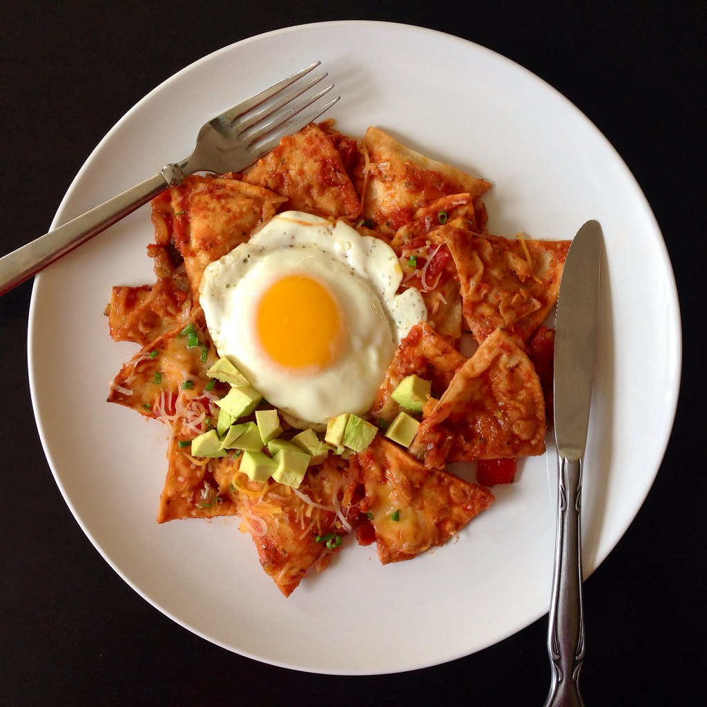

Authentic Chilaquiles Recipe

Description
This is an easy chilaquiles recipe which is a common Mexican snack dish that I personally commonly enjoy!
Ingredients
- 2 cups oil for frying
- 30 (6-inch) corn tortillas, torn into strips
- ¼ cup chopped onion
- 6 large eggs, lightly beaten
- 2 teaspoons salt
- 7 ounces Mexican-style hot tomato sauce or salsa
- ½ cup water
- ½ cup shredded Monterey Jack cheese
Steps
- Gather all ingredients. Heat oil in a large, heavy skillet to 350 degrees F (175 degrees C).
- Fry tortillas and onion in hot oil until crisp and golden brown, stirring frequently.
- Remove to a paper towel-lined plate to drain. Drain the skillet, leaving only a thin residue of oil.
- Place the skillet over medium heat. Return fried tortillas and onion to the skillet and stir in beaten eggs; season with salt. Cook and stir until eggs are firm.
- Stir in tomato salsa and water. Reduce heat and simmer until thickened, about 10 minutes.
- Sprinkle with cheese and continue cooking until cheese is melted.